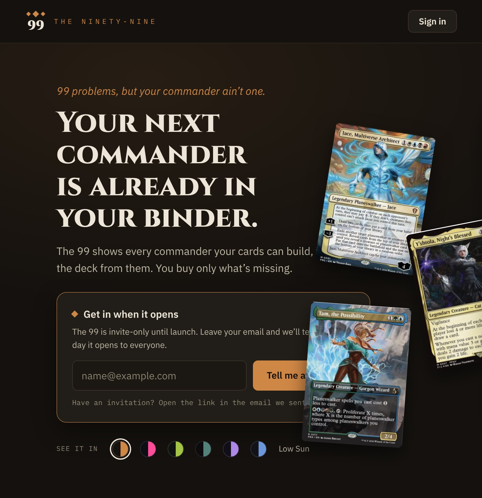
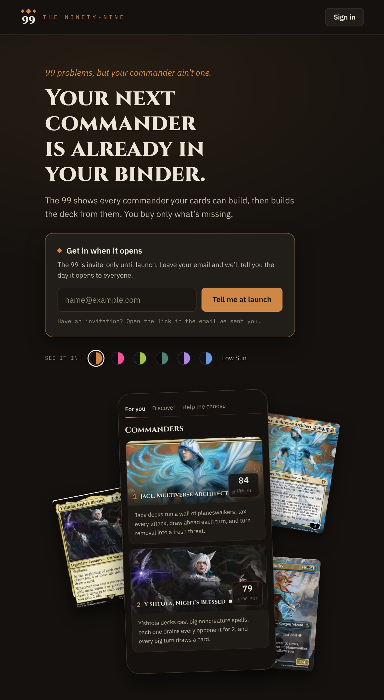
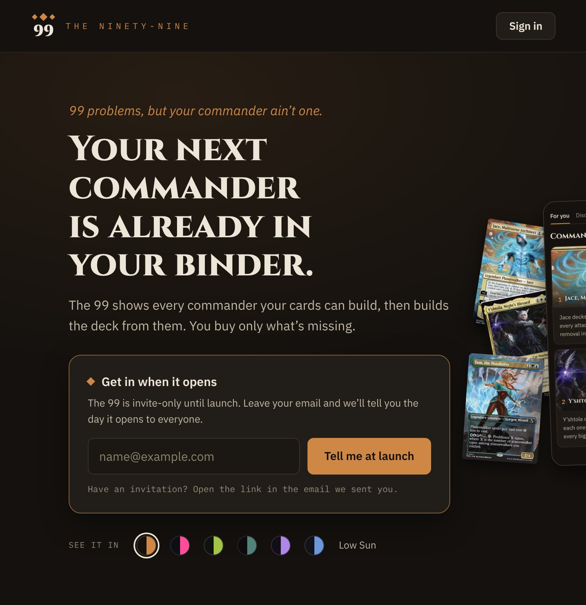

A3Hero at 768
768: the phone stacks under the words
At 768 the hero's second column is 32px wide, so the phone frame sits entirely outside it and the section's clip hides it; only bits of the three cards show, and they slide over the launch panel. Recommended: stack. Every frame is the shipped Hero and TopBar (src/components/landing) rendered at that width with the shipped CSS and fonts; only the hero's grid and the shot box's classes change. Commander reads are stand-ins (the catalog holds the real ones).
Today · shipped

· shipped" width="768" height="793" style="width: 768px; height: 793px">
The phone frame is fully clipped (0% shows in this render); Jace, Y’shtola and Tam overlap Tell me at launch.
A · Stack · recommended

· recommended" width="768" height="1397" style="width: 768px; height: 1397px">
One column. Words, launch panel and theme switch exactly as today; the whole 560 × 560 shot (phone and three cards, desktop size and angles) sits centred 44px under the theme switch.
B · Scale

Scaling cannot work here: even with the gap and right padding cut to 40px the column is 98px, so a phone that fits would be about 50px wide. Shown at 0.62 for comparison: still clipped.
What changes at 768 to 1023
- The hero grid is one column; the words and theme switch keep their 500px cap.
- The shot moves to row 3, centred, 44px under the theme switch.
- The shot is the desktop box unchanged: 560 × 560, phone 300 × 560 at −2°, Jace 9°, Y’shtola −11°, Tam 4°, the same drift.
What stays
- Copy, order and every component.
- The phone hero (below 768) and desktop (1280 and up).
- The section’s horizontal clip from #2849 stays as a guard; nothing spills now.
Height
The hero grows from 793px to 1,397px at 768, so the shot sits below the fold on a 768 × 1024 tablet and scrolls in with .anim-gentle-in like today. The words and the launch panel stay above the fold.